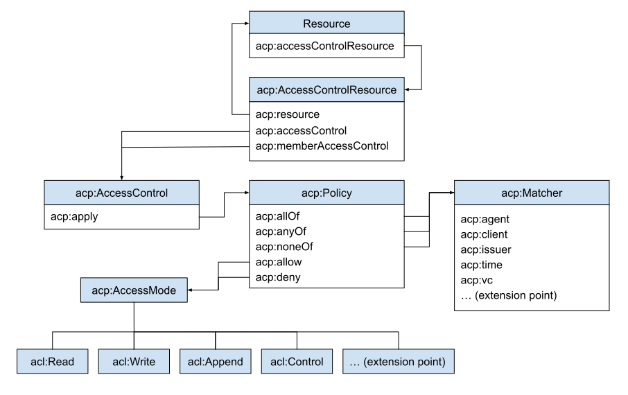

1. Introduction
This section introduces ACP with an overview of key terminology, an explanation of the conventions used in this document, example graphs to illustrate basic concepts of resource access description and validation, a diagram representing the main elements of the ACP data model, and a non-normative RDF representation of the ACP ontology.
1.1. RDF terminology
This document uses the terms resource, property, RDF vocabulary, namespace, namespace IRI, namespace prefix, RDF graph, RDF triple, IRI, literal, blank node, node of an RDF graph, RDF term, subject, predicate, and object of RDF triples, datatype, and IRI and literal term equality as defined in RDF 1.1 Concepts and Abstract Syntax RDF11 CONCEPTS.
1.2. RDF vocabularies and namespace IRIs
This document uses the following RDF vocabularies and corresponding namespace prefix bindings:
| Prefix | Namespace |
|---|---|
acp:
|
http://www.w3.org/ns/solid/acp#
|
acl: |
http://www.w3.org/ns/auth/acl#
|
ex: |
https://example.org/
|
ldp: |
http://www.w3.org/ns/ldp#
|
rdf: |
http://www.w3.org/1999/02/22-rdf-syntax-ns#
|
rdfs: |
http://www.w3.org/2000/01/rdf-schema#
|
owl: |
http://www.w3.org/2002/07/owl#
|
1.3. ACP terminology
This section is non-normative.
- Context graph
- Context graphs describe the attributes of resource access instances. Those attributes can be matched to sets of conditions defined in the form of an authorization graph in order to determine Access Modes granted over resources.
- Authorization graphs authoritatively define the conditions for granting Access Modes over resources through Access Controls, Policies and Matchers. The result of applying an authorization graph to a described instance of resource access is an access grant graph.
- Access grant graph
- Access grant graphs describe sets of granted access modes over resources in the context of resource access instances.
1.4. Example graphs
This section is non-normative.
Throughout this document, color-coded boxes contain the RDF representation of example context graphs, authorization graphs, and access grant graphs serialized in Turtle. Those graphs use a mix of IRIs and blank nodes where applicable to better show the range of possible representations.
The following example context graph describes an instance of resource access and could be translated as: "Bob is trying to access resource X using client application Y with his identity asserted by identity provider Z.".
# This box contains a context graph # It describes an instance of resource access [] acp:agent ex:Bob ; acp:target ex:resourceX ; acp:client ex:ClientApplicationY ; acp:issuer ex:IdentityProviderZ .
The following example
authorization graph
authoritatively defines the conditions of access to resource X and
could be translated as:
"Access to resource X is mandated by one Access Control that
applies one Policy which allows access mode
acl:Read when the agent matcher is satisfied that
Alice or Bob are the agent trying to access resource X.".
# This box contains an authorization graph
# It describes the conditions required for accessing a resource
[]
a acp:AccessControlResource ;
acp:resource ex:resourceX ;
acp:accessControl [
a acp:AccessControl ;
acp:apply [
a acp:Policy ;
acp:allow acl:Read ;
acp:anyOf [
a acp:AgentMatcher ;
acp:agent ex:Alice, ex:Bob ;
]
]
] .
The following example
access grant graph is
the result of applying the previous example authorization graph
which defines access to resource X to the previous example context
graph which describes an instance of access to target resource X.
Bob is matched as the context agent and since it defines no further
restrictions, the policy allowing acl:Read is
satisfied. The following access grant graph could be read as:
"The access mode acl:Read is granted to Bob whom
requested access to resource X using client application Y and
whose identity was asserted by identity provider Z.".
# This box contains an access grant graph
# It describes in context the granted access over a resource
[]
acp:grant acl:Read ;
acp:context [
acp:agent ex:Bob ;
acp:target ex:resourceX ;
acp:client ex:ClientApplicationY ;
acp:issuer ex:IdentityProviderZ ;
] .
1.5. Data model
This section is non-normative.
The following diagram illustrates the main elements of ACP.
1.6. Ontology
All terms defined by the Access Control Policy Language are present in a non-normative RDF representation of the ACP ontology serialized in turtle.
2. Conformance
All assertions, diagrams, examples, pseudocode and notes are non-normative, as are all sections explicitly marked non-normative. Everything else is normative.
The key words MUST, MUST NOT, REQUIRED, SHALL, SHALL NOT, SHOULD, SHOULD NOT, RECOMMENDED, MAY, and OPTIONAL, are to be interpreted as defined in RFC 2119.
Only UPPERCASE usage of the key words defined in RFC 2119 have special meanings, as per RFC 8174.
3. Context Graph
This section introduces the ACP terms used to describe instances of resource access.
3.1. Context
-
acp:Context - Instances of the Context class describe instances of resource access.
-
acp:attribute - The attribute properties defined by ACP describe instances of resource access.
-
acp:target - The target attribute describes requested resources.
-
acp:mode - The mode attribute describes requested modes of access.
-
acp:agent - The agent attribute describes agents initiating requests.
-
acp:creator - The creator attribute describes creators of requested resources.
-
acp:owner - The owner attribute describes owners of requested resources.
-
acp:client - The client attribute describes client applications used to request resources.
-
acp:issuer - The issuer attribute describes identity providers used to assert the identity of agents requesting resources.
-
acp:time - The time attribute describes times of resource access requests.
-
acp:vc - The vc attribute describes verifiable credentials presented as part of resource access requests.
3.1.1. Example Context
The following example context graph denotes instances of resource access over resource X initiated by Bob.
[] a acp:Context ; acp:agent ex:Bob .
The following example context graph denotes instances of resource access over resource X initiated by Bob using client application Y where Bob's identity is asserted by identity provider Z, Bob is the owner of resource X, and Alice is the creator of resource X.
ex:contextA acp:agent ex:Bob ; acp:target ex:resourceX ; acp:owner ex:Bob ; acp:creator ex:Alice ; acp:client ex:ClientApplicationY ; acp:issuer ex:IdentityProviderZ .
The following example context graph denotes instances of resource access where client application X or client application Y are used and identity is asserted by identity provider Z.
[ acp:client ex:ClientApplicationX, ex:ClientApplicationY ; acp:issuer ex:IdentityProviderZ ; ] .
3.2. Context extensibility
Sub-properties of acp:attribute can be created to fit
the specific resource access description requirements of
applications.
3.2.1. Example Context extension
Let's imagine a property ex:tag defined as a an
rdfs:subPropertyOf acp:attribute that would describe
tags applied to requested resources. If such a property was
defined, then the following example context graph would denote
instances of resource access over resource X initiated by Bob
where resource X was tagged ex:Music and
ex:FavouriteRecord.
ex:contextA acp:agent ex:Bob ; acp:target ex:resourceX ; ex:tag ex:Music, ex:FavouriteRecord .
4. Authorization Graph
This section introduces the ACP terms used to control access to resources.
4.1. Access Control Resource
-
acp:AccessControlResource - Instances of the Access Control Resource (ACR) class connect resources to their Access Controls.
-
acp:resource -
The resource property connects
ACRs
to
resources
they control. It is the inverse of
acp:accessControlResource. -
acp:accessControl - The access control property connects ACRs to Access Controls.
-
acp:memberAccessControl - The member access control property transitively connects ACRs of member resources to Access Controls.
4.1.1. Example Access Control Resource
The following example authorization graph means that access to resource X is controlled by both Access Controls B and C; furthermore, access to members of resource X is controlled by Access Control D.
ex:accessControlResourceA acp:resource ex:resourceX ; acp:accessControl ex:accessControlB, ex:accessControlC ; acp:memberAccessControl ex:accessControlD .
4.2. Access Control
-
acp:AccessControl - Instances of the Access Control class connect Access Control Resources to their Policies.
-
acp:apply - The apply property connects Access Controls to the Policies they apply to resources.
4.2.1. Example Access Control
The following example authorization graph means that access to resource X is controlled by Policy C.
ex:accessControlResourceA
acp:resource ex:resourceX ;
acp:accessControl [
acp:apply ex:policyC ;
] .
The following two example authorization graphs mean that access to resource X is controlled by Policy D and Policy E.
ex:accessControlResourceA acp:resource ex:resourceX ; acp:accessControl ex:accessControlB, ex:accessControlC . ex:accessControlB acp:apply ex:policyD . ex:accessControlC acp:apply ex:policyE .
[] acp:resource ex:resourceX ; acp:accessControl ex:accessControlF . ex:accessControlF acp:apply ex:policyD, ex:policyE .
4.3. Policy
-
acp:Policy - Instances of the Policy class connect Access Controls to allowed and denied Access Modes as well as sets of Matchers describing instances of resource access.
-
acp:allow - The allow property connects Policies to the Access Modes they allow if satisfied.
-
acp:deny - The deny property connects Policies to the Access Modes they deny if satisfied.
-
acp:allOf - The all of property connects Policies to the set of Matchers all of which MUST must be satisfied for the Policy to be satisfied.
-
acp:anyOf - The any of property connects Policies to the set of Matchers at least one of which MUST be satisfied for the Policy to be satisfied.
-
acp:noneOf - The none of property connects Policies to the set of Matchers all of which MUST NOT be satisfied for the Policy to be satisfied.
4.3.1. Example Policy
The following example authorization graph means that Policy A will allow Read for instances of resource access satisfying both Matcher B and Matcher C.
ex:policyA acp:allow acl:Read ; acp:allOf ex:matcherB, ex:matcherC .
The following example authorization graph means that a Policy will deny Write for instances of resource access satisfying either Matcher B or Matcher C.
[] acp:deny acl:Write ; acp:anyOf ex:matcherB, ex:matcherC .
The following example authorization graph means that Reading and Writing resource X will be allowed for instances of resource access satisfying Matcher A and not Matcher B.
[
acp:resource ex:resourceX ;
acp:accessControl [
acp:apply [
acp:allow acl:Read, acl:Write ;
acp:anyOf ex:matcherA ;
acp:noneOf ex:matcherB ;
] ;
] ;
] .
4.4. Matcher
-
acp:Matcher - Instances of the Matcher class are descriptions of matching resource access Contexts. To satisfy a Matcher, every described resource access attribute must match the resource access Context.
-
acp:agent - The agent attribute used in a Matcher defines a set of agents, at least one of which MUST match the resource access Context for the agent restriction to be satisfied.
-
acp:PublicAgent - The Public Agent named individual used in an agent restriction means that the restriction is always satisfied.
-
acp:AuthenticatedAgent - The Authenticated Agent named individual used in an agent restriction means that any agent in the Context satisfies the restriction.
-
acp:CreatorAgent - The Creator Agent named individual used in an agent restriction means that the restriction is satisfied if the Context contains an agent that is also a creator.
-
acp:OwnerAgent - The Owner Agent named individual used in an agent restriction means that the restriction is satisfied if the Context contains an agent that is also an owner.
-
acp:client - The client attribute used in a Matcher defines a set of clients, at least one of which MUST match the resource access Context for the client restriction to be satisfied.
-
acp:PublicClient - The Public Client named individual used in a client restriction means that the restriction is always satisfied.
-
acp:issuer - The issuer attribute used in a Matcher defines a set of issuers, at least one of which MUST match the resource access Context for the issuer restriction to be satisfied.
-
acp:PublicIssuer - The Public Issuer named individual used in an issuer restriction means that the restriction is always satisfied.
-
acp:time - The time attribute used in a Matcher defines a set of times, at least one of which MUST match the resource access Context for the time restriction is satisfied.
-
acp:vc - The vc attribute used in a Matcher defines a set of types of Verifiable Credentials (VC), at least one of which MUST match the resource access Context for the vc restriction to be satisfied.
-
acp:AlwaysSatisfiedRestriction - Defined instances of the Always Satisfied Restriction class are used in Matcher restrictions to indicate that the restriction is always satisfied. The default behaviour of a Matcher is to not be satisfied, so this is the only way to make a Matcher always satisfied.
4.4.1. Example Matcher
The following example authorization graph means that Agent Matcher A will be satisfied when either Alice or the owner of the access controlled resource are requesting access.
ex:matcherA a acp:Matcher ; acp:agent ex:Alice, acp:OwnerAgent .
The following example authorization graph means that the defined Client Matcher will be satisfied when matched against a context graph where the client used to access the access controlled resource is client B.
[ a acp:Matcher ; acp:client ex:clientB ; ] .
The following example authorization graph means that Issuer Matcher A will be satisfied when matched against a context graph where the identity provider used to assert the identity of the agent requesting access to the access controlled resource is issuer B.
ex:matcherA a acp:Matcher ; acp:issuer ex:issuerB .
The following example authorization graph means that the defined Verifiable Credentials (VC) Matcher A will be satisfied when matched against a context graph where one of the presented verifiable credentials is an instance of credential B, is valid and has been issued to the agent requesting the resource.
[] a acp:Matcher ; acp:vc ex:credentialB .
The following example authorization graph means that matcher A will be satisfied only if either Alice or Bob are the agent requesting resource access and their identity was asserted by Identity Provider B.
ex:matcherA a acp:Matcher ; acp:agent ex:Bob, ex:Alice ; acp:issuer ex:IdentityProviderB .
The following example authorization graph means that the defined matcher will be satisfied only if Alice, whose identity is asserted by Identity Provider B, is the agent requesting resource access and is doing so presenting a VC that is a verified instance of credential A issued to Alice.
[ a acp:Matcher ; acp:agent ex:Alice ; acp:issuer ex:IdentityProviderB ; acp:vc ex:credentialA ; ] .
The following example authorization graph means that Policy A denies Read and Write access to all clients but client C and policy B allows read to all clients. If Policy A and B control access to a resource, then anyone using client C will have Read access to that resource.
ex:policyA
acp:deny acl:Read, acl:Write ;
acp:anyOf [
acp:client acp:PublicClient ;
] ,
acp:noneOf [
acp:client ex:clientC
] .
ex:policyB
acp:allow acl:Read ;
acp:anyOf [
acp:client:PublicClient ;
] .
4.5. Matcher extensibility
All sub-properties of acp:attribute correspond
implicitly to their own type of Matcher restriction. If applications
support additional sub-properties of
acp:attribute other than the ones defined by ACP, then,
they MUST also implement corresponding matching algorithms.
4.5.1. Example Matcher extension
Given the property ex:tag previously defined in the
example context extension
as a an rdfs:subPropertyOf acp:attribute that
describes tags applied to requested resources; the following
example context graph would mean that Policy 1 allows Read and is
satisfied by instances of resource access initiated over a
resource that was tagged ex:FavouriteRecord or
ex:Wishlist.
ex:policy1
acp:allow acl:Read ;
acp:anyOf [
ex:tag ex:FavouriteRecord, ex:Wishlist ;
] .
5. Access Grant Graph
This section introduces the ACP terms used to grant access to resources.
5.1. Access Grant
-
acp:AccessGrant - Instances of the Access Grant class define sets of Access Modes granted in particular Contexts.
-
acp:context - The context property connects Access Grants to the Contexts in which they're given.
-
acp:grant - The grant property connects Access Grants to the Access Modes they grant.
5.1.1. Example Access Grant
The following example access grant graph means that Access Modes
acl:Read and acl:Write have been granted
to Bob for accessing resource X.
[]
acp:grant acl:Read, acl:Write ;
acp:context [
acp:agent ex:Bob ;
acp:target ex:resourceX ;
] .
5.2. Access Mode extensibility
-
acp:AccessMode - The ACP specification does not define specific Access Modes. Instead, any Access Mode granted is an instance of the Access Mode class. Access Modes and their granularity can be tailored to the needs of an application. Access Modes defined in other vocabularies (for example ACL) can also be used.
5.2.1. Example Access Mode
The following example access grant graph means that
acl:Read and ex:Delete are Access Modes;
furthermore, it means that acl:Read and
ex:Delete have been granted to Bob for accessing
resource X.
[]
acp:grant acl:Read, ex:Delete ;
acp:context [
acp:agent ex:Bob ;
acp:target ex:resourceX ;
] .
6. Access Control resolution
This section introduces the ACP access control resolution algorithm for resolving permissions to access controlled resources.
6.1. Effective Policies
Both the acp:resource property and its inverse
acp:accessControlResource MUST be taken into account in
determining the Access Control Resources controlling access to
resources.
All Access Controls controlling member resources access via the
acp:memberAccessControl property MUST be included in
the set of Access Controls linked as
acp:accessControl in the effective authorization graph
of a resource.
The set of Policies controlling access to a resource MUST contain
all Policies that are linked to a resource via the
property path
acp:accessControlResource/acp:accessControl/acp:apply
SPARQL11 QUERY.
6.1.1. Effective Policies example
The following example authorization graph means that access to resource X is controlled by both Access Controls B and C, access to resource X is therefore controlled by Policy E and Policy F. The member Access Controls are not taken into account at this level. Member Access Control D will be included in the effective authorization graph of resource X's members' ACRs both as an Access Control and a member Access Control. Therefore, Policy G will be part of the set of effective Policies controlling access to resource X's members and transitively to further members of member resources.
ex:accessControlResourceA
acp:resource ex:X ;
acp:accessControl ex:accessControlB, ex:accessControlC ;
acp:memberAccessControl ex:accessControlD .
ex:accessControlB
acp:apply ex:PolicyE .
ex:accessControlC
acp:apply ex:PolicyF .
ex:accessControlD
acp:apply ex:PolicyG .
6.2. Granted Access Modes
An Access Mode MUST be granted over a resource if and only if in the set of Policies controlling access to it:
- A satisfied policy allows the Access Mode; and
- No satisfied policy denies the Access Mode.
6.2.1. Granted Access Modes example
The following example authorization graph means that access to resource X is controlled by Policy B and Policy C. Depending on the satisfaction of Policies B and C, different access modes will be granted.
-
If only Policy B is satisfied, then Access Modes
acl:Readandacl:Writewill be granted. -
If both Policy B and Policy C are satisfied, then only Access
Mode
acl:Readwill be granted. - If only Policy C is satisfied, then no Access Mode will be granted.
[
acp:resource ex:X ;
acp:accessControl [
acp:apply ex:policyB, ex:policyC ;
]
] .
ex:policyB
acp:allow acl:Read, acl:Write .
ex:policyC
acp:deny acl:Write .
6.2.2. Granted Access Modes pseudocode
function grantAccessModes(policies, context) {
const allow = new Set, deny = new Set
// Gather allowed and denied access modes from satisfied policies
for (const policy of policies)
if (isSatisfiedPolicy(policy, context)) {
for (const mode of policy.allow)
allow.add(mode)
for (const mode of policy.deny)
deny.add(mode)
}
// Deny overrules allow.
for (const mode of deny)
allow.delete(mode)
return allow
}
6.3. Satisfied Policy
Policies are satisfied via the acp:allOf,
acp:anyOf and acp:noneOf properties which
act respectively as intersection, union and exclusion operators.
A Policy MUST be considered satisfied if and only if:
-
It references at least one Matcher via a
acp:allOforacp:anyOfproperty; and - At least one Matcher it references matches the given resource access description; and
-
The
acp:allOf,acp:anyOfandacp:noneOfof conditions it defines are satisfied.
Given that the acp:noneOf condition excludes matches, a
policy without a satisfied acp:allOf or
acp:anyOf condition is never satisfied.
6.3.1. Satisfied Policy example
The following example authorization graph means that access to resource X is controlled by Policy A. Depending on the satisfaction of Matchers B, C, D, E and F, Policy A will be satisfied or not.
- If either Matcher B or Matcher C are not satisfied, then Policy A will not be satisfied.
- If both Matcher D and Matcher E are not satisfied, then Policy A will not be satisfied.
- If Matcher F is satisfied, then Policy A will not be satisfied.
- If both Matcher B and Matcher C are satisfied, and, either Matcher D or Matcher E are satisfied, and, Matcher F is not satisfied, then Policy A will be satisfied.
[
acp:resource ex:X ;
acp:accessControl [
acp:apply ex:policyA ;
]
] .
ex:policyA
acp:allOf ex:matcherB, ex:matcherC ;
acp:anyOf ex:matcherD, matcherE ;
acp:noneOf ex:matcherF .
6.3.2. Satisfied Policy pseudocode
function isSatisfiedPolicy(policy, context) {
// If any 'none of' matcher is satisfied then the policy is not satisfied.
for (const matcher of policy.noneOf)
if (isSatisfiedMatcher(matcher, context))
return false
// If any 'all of' matcher is not satisfied then the policy is not satisfied.
for (const matcher of policy.allOf)
if (!isSatisfiedMatcher(matcher, context))
return false
// If any 'any of' matcher is satisfied then the policy is satisfied.
for (const matcher of policy.anyOf)
if (isSatisfiedMatcher(matcher, context))
return true
// At this point there are
// - no satisfied 'none of' matchers,
// - no unsatisfied 'all of' matchers and
// - no satisfied 'any of' matchers.
// Hence, the policy is satisfied if it has
// - an 'all of' condition and
// - no 'any of' condition.
return policy.allOf.size !== 0 && policy.anyOf.size === 0
}
6.4. Satisfied Matcher
The default operation of matching is based on IRI and literal term equality as defined in the RDF 1.1 Concepts and Abstract Syntax RDF11 CONCEPTS.
A Matcher MUST be considered satisfied if and only if:
- It defines at least one matching attribute; and
- All the attributes defined find a match in the given resource access description.
6.4.1. Satisfied Matcher example
6.4.2. Satisfied Matcher pseudocode
7. Server implementation
This section introduces ACP server capability and ACR discovery, as well as ACR editing, and ACP resources lifecycle management.
7.1. Capability discovery
When a server wants to enable applications to discover its ACP capabilities, it MUST do so via link headers.
The server MUST advertise the access modes it supports by responding
to HTTP OPTIONS requests over ACP access control resources including
a Link header with the rel value of
http://www.w3.org/ns/solid/acp#grant and the full URI
of an access mode as link target [RFC8288]. The server MUST produce
one such Link header for each access mode it supports.
For example, if a server supports the ACL read, write and append
access modes, it should advertise it by responding to HTTP OPTIONS
requests over ACP access control resources including three link
headers with rel value of
http://www.w3.org/ns/solid/acp#grant and respectively
targets of http://www.w3.org/ns/auth/acl#Read,
http://www.w3.org/ns/auth/acl#Write and
http://www.w3.org/ns/auth/acl#Append in order to make
it explicit which set of access modes are understood and relevant
when editing ACP policies.
The server MUST advertise the request attributes it supports by
responding to HTTP OPTIONS requests over ACP access control
resources including a Link header with the rel value of
http://www.w3.org/ns/solid/acp#attribute and the full
URI of an acp attribute as link target [RFC8288]. The server MUST
produce one such Link header for each request attribute it supports.
For example, if a server supports the ACP agent, client and issuer
request attributes, it should advertise it by responding to HTTP
OPTIONS requests over ACP access control resources including three
link headers with rel value of
http://www.w3.org/ns/solid/acp#attribute and
respectively targets of
http://www.w3.org/ns/solid/acp#agent,
http://www.w3.org/ns/solid/acp#client and
http://www.w3.org/ns/solid/acp#issuer in order to make
it explicit which set of request attributes are understood and
relevant when editing ACP matchers.
7.2. ACR discovery
When a server wants to enable applications to discover the ACP
access control resource associated with a given resource, the server
MUST advertise the ACP access control resource that is associated
with that resource by responding to HTTP requests over the resource
including a Link header with the rel value
of acl (acl Link Relation) and the ACP access control
resource as the link target [RFC8288]. The same mechanism is used in
Web Access Control resource discovery.
A server responding to an HTTP request over an ACP access control
resource MUST include a Link header with the
rel value of type and the
acp:AccessControlResource URI as link target.
7.3. ACR editing
The owner of a storage is implicitly considered an owner of all the resources in the URI space corresponding to the storage.
An owner of a resource is implicitly considered an owner of its associated Access Control Resource.
An owner of an Access Control Resource implicitly has full read and write access over it.
To add or remove an Access Control from an ACR, agents that are not owners of said ACR need read and write access to both the ACR itself and to the resource where said Access Control is defined. In other words, Access Controls defined as part of a separate resource can be protected from unwanted edits in and out of ACRs by setting adequate permissions in their own ACR.
7.4. Resource management
Access Control Resources MUST be server managed.
There is a one to one relationship between a resource and its authoritative source of access control. Therefore, when resources are created or deleted, the corresponding ACRs MUST be created or deleted accordingly.
Access Controls, Policies and Matchers MAY all be access controlled via their own ACR.
As long as an Access Control, a Policy or a Matcher is referenced by an ACR, it MUST not be deleted. However, if such consistency failed to be enforced or if an Access Control, a Policy or a Matcher is not accessible for any other reason, then access permissions resolution MUST fail to its default behaviour of only granting read and write access to the invalid ACR to its owners; read and write access MUST not be implicitly granted to a resource whose access control resolution fails, even to owners of that resource.